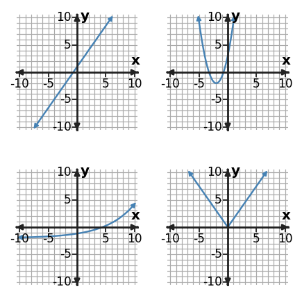
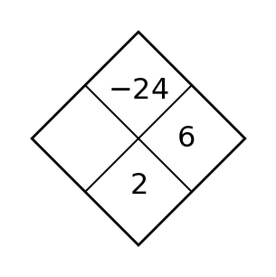
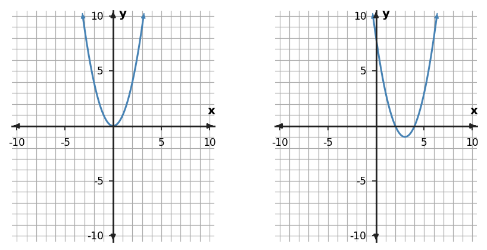
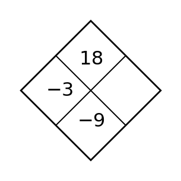
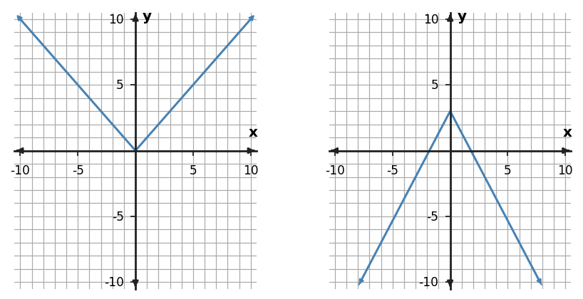

Problem 1
Complete the Diamond Problem. The top is the product of the side numbers and the bottom is their sum.

Complete the Diamond Problem. The top is the product of the side numbers and the bottom is their sum.
Solve the system $ x+2y=1$ and $2x-y=7$. State the solution as an ordered pair.
Solve the system $ 2x+3y=-3$ and $4x-y=-13$. State the solution as an ordered pair.
Solve the system $ x+2y=-1$ and $2x-2y=10$. State the solution as an ordered pair.
Classify the function family represented by the table using the strongest numerical pattern in the values as evidence.
| x | y |
|---|---|
| -3 | 3 |
| -2 | 0 |
| -1 | -1 |
| 0 | 0 |
| 1 | 3 |
The four graphs below show familiar function families. Identify the family in the top-left, top-right, bottom-left, and bottom-right positions, in that order.

Solve the system $ 3x+y=-3$ and $2x-2y=-10$. State the solution as an ordered pair.
Relationship A is $y=-x+4$. Relationship B is shown in the table. Which relationship changes faster, and which has the greater starting value?
| x | Relationship B |
|---|---|
| 0 | -1 |
| 2 | 3 |
| 4 | 7 |
A table has a constant ratio of 5, but the first few plotted points look almost collinear in a small graph window. Classify the family using the stronger evidence.
Solve the system $ 2x+3y=-2$ and $4x-y=-4$. State the solution as an ordered pair.
Relationship A is $y=x+2$. Relationship B is shown in the table. Which relationship changes faster, and which has the greater starting value?
| x | Relationship B |
|---|---|
| 0 | -3 |
| 2 | 4 |
| 4 | 11 |
Relationship A is $y=3x-1$. Relationship B is shown in the table. Which relationship changes faster, and which has the greater starting value?
| x | Relationship B |
|---|---|
| 0 | 0 |
| 2 | 1 |
| 4 | 2 |
Complete the Diamond Problem. The top is the product of the side numbers and the bottom is their sum.

Graph the solution to $y\ge 3x$ and describe which side of the boundary line is included.
Graph the solution to $y\ge x+1$ and describe which side of the boundary line is included.
Graph the solution to $y\ge x-3$ and describe which side of the boundary line is included.
Describe the translation from $y=x^2$ to $y=(x-4)^2+3$.
Translate $y=x^2$ 4 units right and 2 units down. Complete the translated coordinates for the three key points.
| Parent point | Translated point |
|---|---|
| (-1,1) | ? |
| (0,0) | ? |
| (1,1) | ? |
Graph the solution to $y\ge -2x-4$ and describe which side of the boundary line is included.
Write the linear equation represented by the table. Identify the rate of change and starting value.
| x | y |
|---|---|
| 0 | 0 |
| 1 | -1.5 |
| 2 | -3 |
The left graph is a parent function and the right graph is a translation. Describe the horizontal and vertical shift, then write a matching translated equation.

Graph the solution to $y\ge x$ and describe which side of the boundary line is included.
Write the linear equation represented by the table. Identify the rate of change and starting value.
| x | y |
|---|---|
| 0 | 3 |
| 1 | 2.5 |
| 2 | 2 |
Write the linear equation represented by the table. Identify the rate of change and starting value.
| x | y |
|---|---|
| 0 | 4 |
| 1 | 5.5 |
| 2 | 7 |
Complete the Diamond Problem. The top is the product of the side numbers and the bottom is their sum.

Describe the solution region for the system $y\gt3x+4$ and $y\le -x-4$, including which boundary is dashed and which is solid.
Describe the solution region for the system $y\gt x-1$ and $y\le x+2$, including which boundary is dashed and which is solid.
Describe the solution region for the system $y\gt x$ and $y\le -x+4$, including which boundary is dashed and which is solid.
The parent values come from $y=x^2$. Apply the rule $g(x)=2.5f(x)$ and complete the transformed y-values.
| x | Parent y | Transformed y |
|---|---|---|
| -2 | 4 | ? |
| -1 | 1 | ? |
| 0 | 0 | ? |
| 1 | 1 | ? |
| 2 | 4 | ? |
Compare the left parent graph and the right transformed graph. Describe the transformation using stretch/compression/reflection language.

Describe the solution region for the system $y\gt2x+1$ and $y\le -3x+5$, including which boundary is dashed and which is solid.
Find and interpret the slope from $(1,2)$ to $(3,5)$. Treat $x$ as hours and $y$ as miles from a reference point.
For $f(x)=|x|$, compare $g(x)=-1.5f(x)$ with the table of points $(-2,-3), (-1,-1.5), (0,0), (1,-1.5), (2,-3)$. Do the equation and table represent the same transformed function? Explain.
Describe the solution region for the system $y\gt-x+3$ and $y\le 2x-3$, including which boundary is dashed and which is solid.
Find and interpret the slope from $(2,3)$ to $(6,11)$. Treat $x$ as hours and $y$ as miles from a reference point.
Find and interpret the slope from $(0,-1)$ to $(1,1)$. Treat $x$ as hours and $y$ as miles from a reference point.
Complete the Diamond Problem. The top is the product of the side numbers and the bottom is their sum.

Solve the system $y=x-5$ and $y=-x+1$. State the solution.
Solve the system $y=-2x$ and $y=-x+1$. State the solution.
Solve the system $y=x-2$ and $y=-3x+2$. State the solution.
Simplify $(5x^2 - 1)-(x^2 + 3x - 4)$.
Multiply $2(x^2 + x + 4)$.
Solve the system $y=-3x-10$ and $y=x+2$. State the solution.
Write the linear equation represented by the table. Identify the rate of change and starting value.
| x | y |
|---|---|
| 0 | -5 |
| 1 | -6.5 |
| 2 | -8 |
Multiply $(x-1)(x+2)$ and write the result in standard form.
Solve the system $y=-2x-2$ and $y=-x$. State the solution.
Write the linear equation represented by the table. Identify the rate of change and starting value.
| x | y |
|---|---|
| 0 | -2 |
| 1 | -2.5 |
| 2 | -3 |
Write the linear equation represented by the table. Identify the rate of change and starting value.
| x | y |
|---|---|
| 0 | 3 |
| 1 | 1.5 |
| 2 | 0 |
Complete the Diamond Problem. The top is the product of the side numbers and the bottom is their sum.

Adult tickets cost \$12 and student tickets cost \$5. A school sold 6 tickets for \$44. Write and solve a system to determine how many of each type were sold.
Adult tickets cost \$9 and student tickets cost \$6. A school sold 9 tickets for \$63. Write and solve a system to determine how many of each type were sold.
Adult tickets cost \$8 and student tickets cost \$5. A school sold 8 tickets for \$52. Write and solve a system to determine how many of each type were sold.
For $y=-x^2 - x - 1$, identify the y-intercept and the direction of opening.
Use the table to identify the axis of symmetry and vertex of the quadratic pattern.
| x | y |
|---|---|
| 0 | 12 |
| 1 | 6 |
| 2 | 4 |
| 3 | 6 |
| 4 | 12 |
Adult tickets cost \$11 and student tickets cost \$6. A school sold 9 tickets for \$69. Write and solve a system to determine how many of each type were sold.
A linear model for a school fundraiser is $M=3d+12$, where $d$ is days and $M$ is hundreds of dollars. Predict $M$ at $d=6$ and interpret the slope and intercept.
Use the graph to identify the vertex, axis of symmetry, direction of opening, and any visible x-intercepts.

Adult tickets cost \$10 and student tickets cost \$6. A school sold 12 tickets for \$96. Write and solve a system to determine how many of each type were sold.
A linear model for a school fundraiser is $M=3d+12$, where $d$ is days and $M$ is hundreds of dollars. Predict $M$ at $d=7$ and interpret the slope and intercept.
A linear model for a school fundraiser is $m=3d+21$, where $d$ is days and $m$ is hundreds of dollars. Predict $m$ at $d=9$ and interpret the slope and intercept.